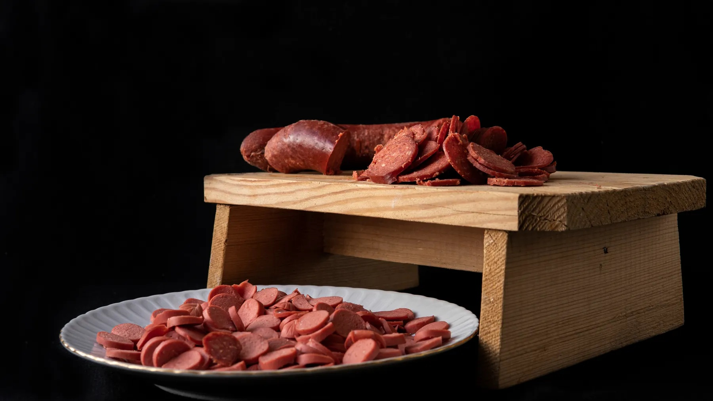
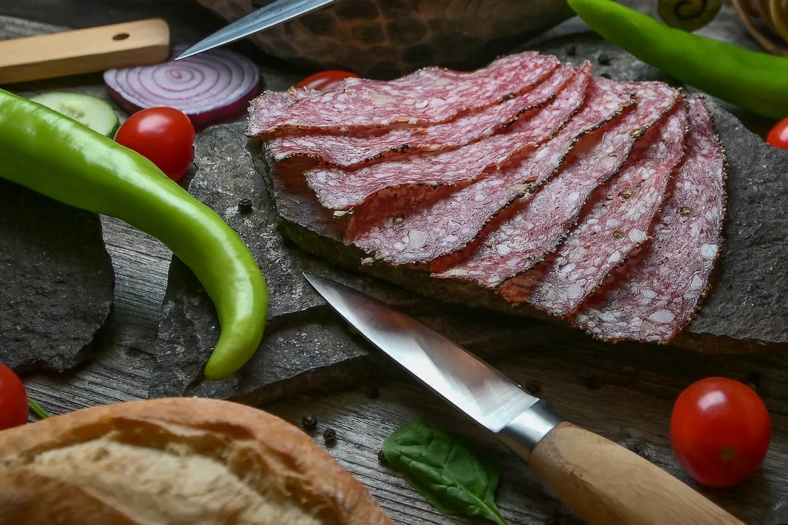
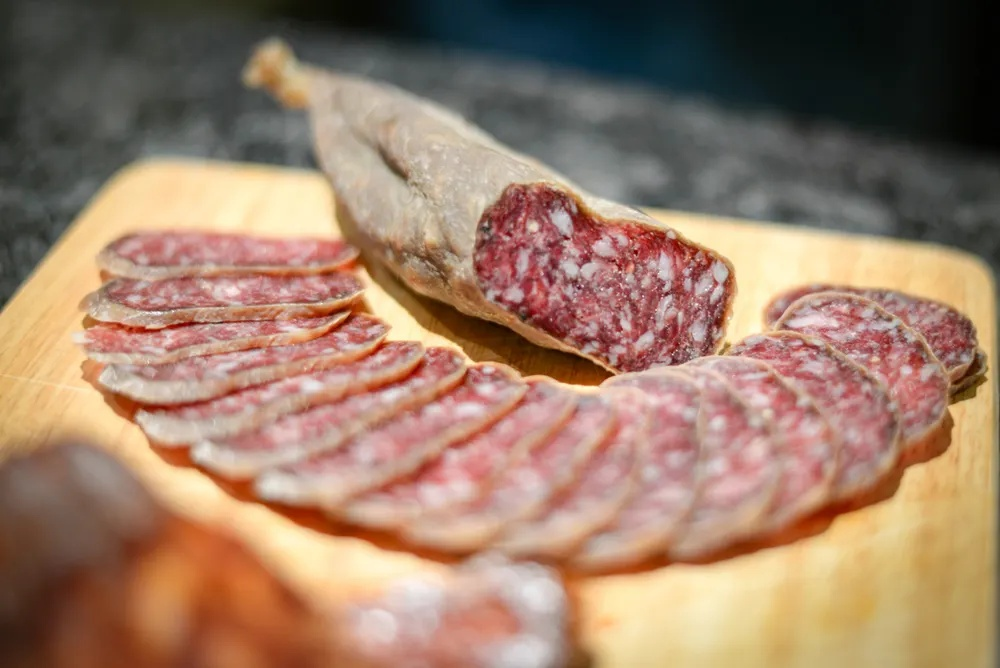
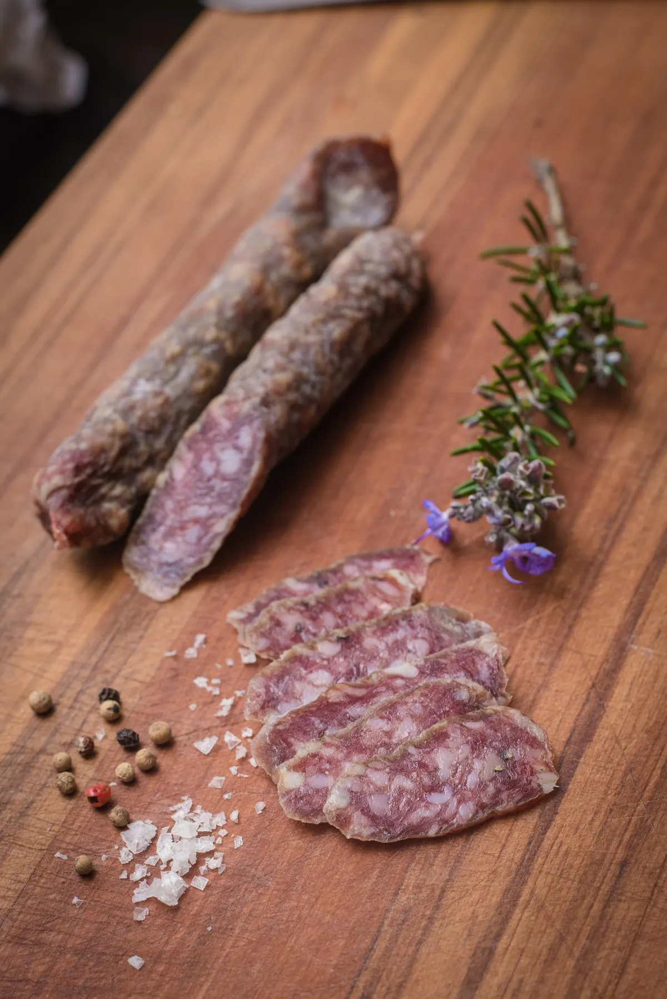
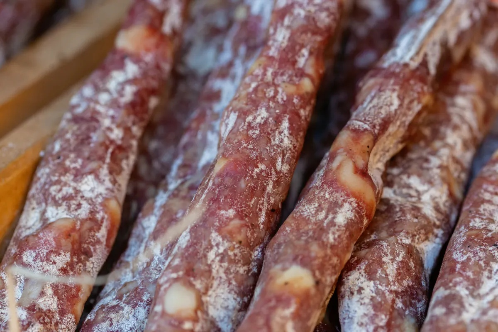
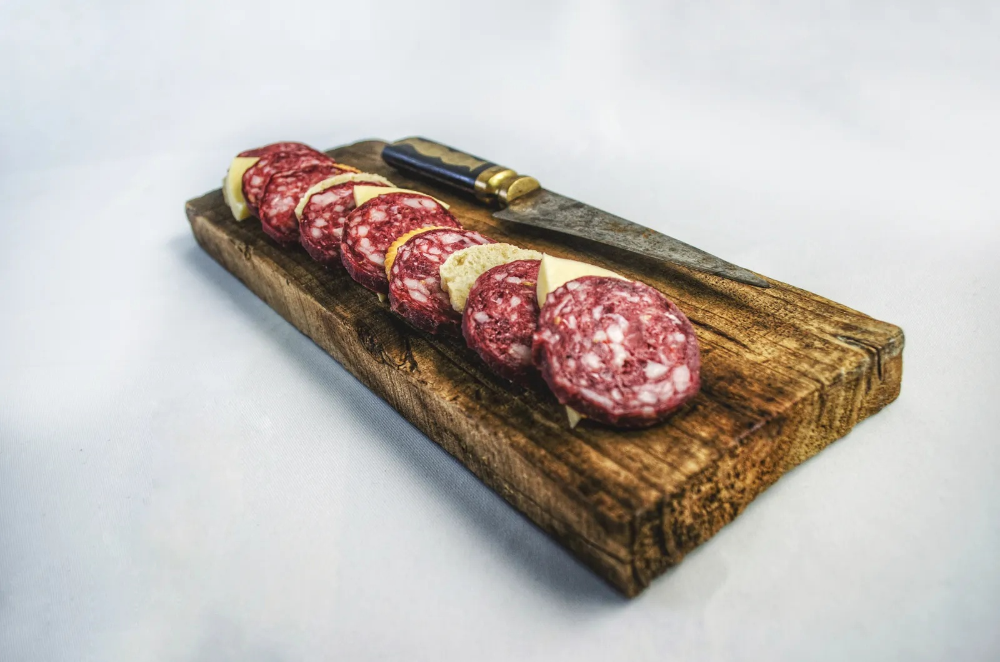

CHACINAS Y EMBUTIDOS
Chacinas Olmedo
EL BOSQUE, CÁDIZ

Un comercio de chacinas
en El Bosque.
Calle la Fuente, 1 11670 El Bosque
Cómo llegar (Google Maps, nueva pestaña)EL NEGOCIO
La chacinería tiene
su sitio en El Bosque.
Chacinas
Embutidos
Charcutería

Chacinas Olmedo es un comercio vinculado a la chacinería y los embutidos en El Bosque, Cádiz.
Si buscas un establecimiento de esta actividad en el pueblo, puedes encontrarnos en Calle la Fuente, 1. Esta página reúne la información esencial para conocernos, situarnos y contactar directamente.
Para saber qué productos hay disponibles, resolver una consulta concreta o preparar tu visita, llama al 956 716 600. El contacto con el establecimiento es la mejor forma de conocer el surtido actual.
Consultar con OlmedoCULTURA DE CHARCUTERÍA
El apetito empieza
por la vista.
El corte, las texturas, los matices. Una mirada de cerca al mundo de las chacinas y los embutidos.



Estas fotografías ilustran la categoría de chacinería. No son imágenes de Olmedo ni constituyen un catálogo de productos disponibles.
¿Buscas algo en concreto?
Pregunta por el surtido y la disponibilidad directamente al establecimiento.
Llamar para consultarVEN A CONOCERNOS
La Fuente, 1.
Tu dirección para encontrar
Chacinas Olmedo en El Bosque.
11670 El Bosque, Cádiz
Abre la dirección en Google Maps
y elige desde dónde quieres venir.
Antes de desplazarte, puedes llamar para consultar el horario de atención.

CONTACTO DIRECTO
Hablemos de
lo que buscas.
Consulta productos, disponibilidad
y horario antes de tu visita.